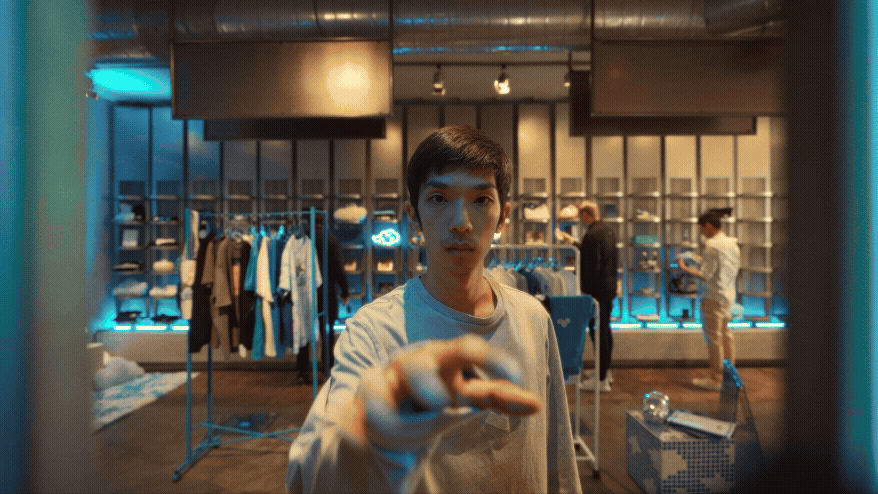
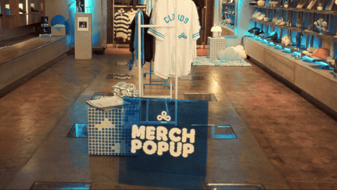
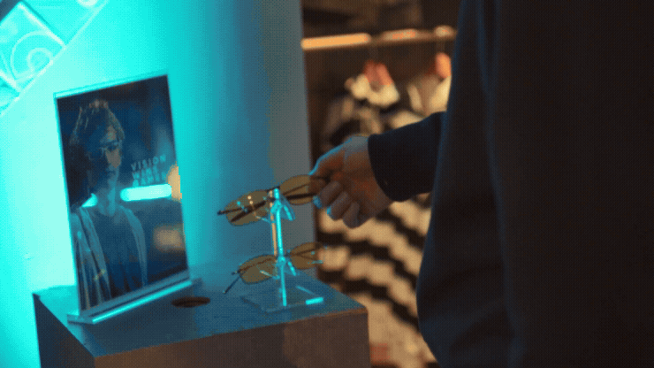
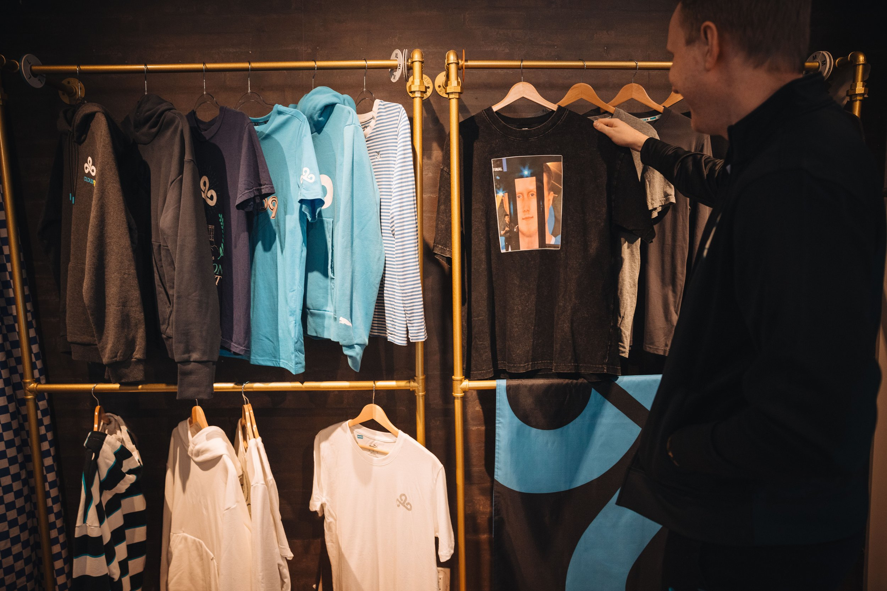
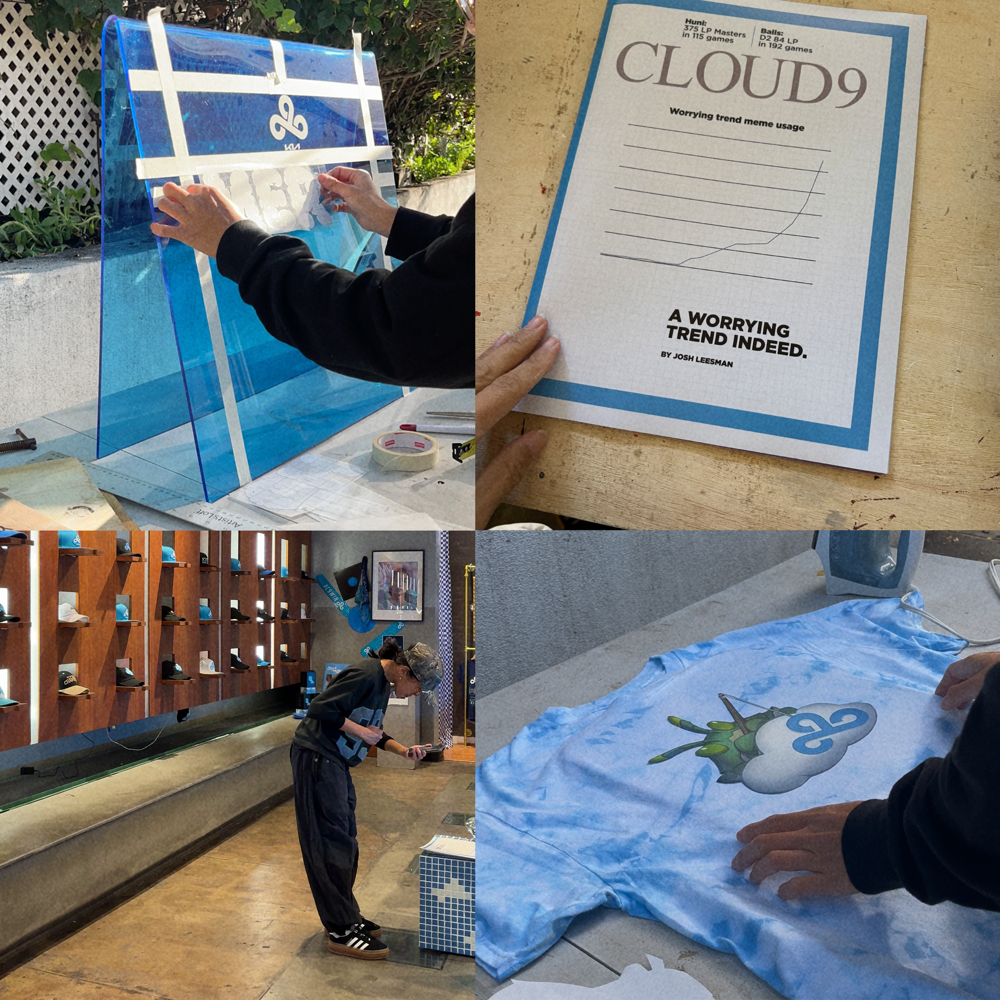
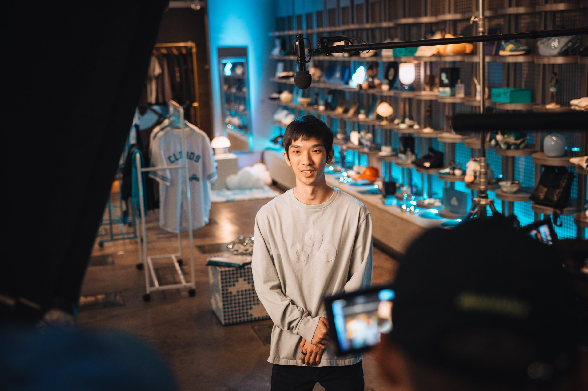

LCS PROMO video
Client: Riot Games
Year: 2026
Role: Set Fabrication | Set Design | Art Direction
For Riot Games’ LCS season kickoff video, we collaborated with their production team to create a faux, stylized Cloud9 pop-up merch shop. The space brought together iconic players from past eras and current talent, framing the upcoming season through Cloud9’s history.
Custom props and set details paid homage to iconic team memes and moments, layered alongside historic merch as visual callbacks for longtime fans. A custom acrylic sign anchored the build, while the lighting, styling, and color palette were dialed in to reflect Cloud9’s brand.
A pop-up tribute to Cloud9 history.
Custom Props
We developed a suite of custom props that blended humor, nostalgia, and brand storytelling. This included a custom acrylic sign, faux magazine cover, “Body by Jensen” cologne bottles, Meteos’ glasses display ads, and oversized graphic tees featuring Zven’s iconic face.
Layout and Lighting
We worked with the director to develop a set layout that kept talent movement and camera angles in mind. Clothing racks were lined through the middle pathway to allow more opportunities for action to occur in the mid-ground of the shot. Lighting was designed to feel elevated and punchy, rigged throughout the hat display and secondary merch wall in a vibrant blue.







Directed/Produced by Riot Games In House Team